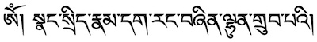

macOS and Tibetan script#
Tibetan support works equally well for old Intel Macs and the new Apple Silicon based Macs.
Fonts#
The Mac comes with Tibetan fonts preinstalled.
Font name |
Sample |
Glyphs |
Comment |
|---|---|---|---|
Kailasa |
1.393 |
Version 16.0d1e1, by Otani University Shin Buddhist Research Institute |
|
Kokonor |
 |
1.344 |
Version 13.0d1e3, Otani University Shin Buddhist Research Institute |
Both fonts have a very limited glyph count, are not under a free license, and are only available on macOS.
For alternative fonts, see Tibetan fonts.
Tibetan keyboard#
General overview
For different keyboards and their support on different platform see: Tibetan keyboards

To activate a Tibetan keyboard, start System Preferences and select Keyboard, Input Sources. Press the +-Icon (marked in red in the image) and add the Tibetan - Wylie keyboard.

Make sure that Show Input menu in menu bar is enabled so that you can easily switch keyboards by clicking the input-menu icon in the menu bar.
Newer Mac hardware keyboards have a globe icon üåê that can be used to switch between the Tibetan keyboard and your usual keyboard.
Warning
macOS implementation of Wylie is currently quite broken. The <shift>-key to access Sanskrit variants doesn’t work currently, and one needs to use CAPS LOCK to access those. Additionally, the = is used as non-standard stacking-key. So make sure that CAPS LOCK is not assigned to other functionality, like switching input methods.
{kind=link}
Chose a keyboard-switcher hotkey#
You can assign an arbitrary hotkey to switch between the keyboards: In System Preferences, Keyboard, select Shortcuts and Input Sources. There either enable the suggested shortcut, or click on the proposed shortcut to enter a new key-combination.
Activating the Tibetan keyboard#
You should now be able to either select the current keyboard by hotkey, or by clicking the input-source icon in the menu bar.
How to type Tibetan Wylie EWTS#
{kind=link}
For an overview how Tibetan is transliterated as Wylie, checkout Wikipedia Wylie transliteration.
Some easy examples with Tibetan - Wylie keyboard enabled:
to type སེམས་ཅན་ཐམས་ཅད།, type
sems can thams cad/to type རྒྱུ་, simply type
rgyuགཡུ is
g.yu, གྱུ isgyu.
Since macOS Wylie input method is Wylie in name-only, it makes sense to activate the Show Keyboard Viewer in the input selector menu-bar icon.
The Caps lock key makes Sanskrit and special symbols available, while the = key supports non-standard stacking.
It might be necessary to experiment a bit with the keyboard viewer active.
Here are the special layouts:
After selecting caps-lock:

after selecting caps-lock and =:

after selcting caps-lock, =, and caps-lock:

Some examples:
So currently, to type ཌྜྷི, one types
<caps lock> d = d = <caps lock> h i.༄༅། ། is
<caps lock> 2 3 <caps lock> / <caps lock> <space> <space> <caps lock> /ཨོཾ་ཨཱཿཧཱུཾ༔ is
o <caps lock> m <caps lock> <space> <caps lock> ah <caps lock> h <caps lock> um :
Not quite the standard way to do things…
Apple is working on a bug-report…
Sanskrit diacritics#
Working with dharma materials often requires access to diacritics. For those who are using an English QWERTY layout, the Apple keyboard ABC - Extended provides easy access to virtually all diacritics imaginable, including IAST Sanskrit transliteration. Install this keyboard from System Preferences, Keyboard, Input Sources and add the ABC - Extended keyboard just as you did with the Tibetan keyboard.
{kind=link}
Some examples for Sanskrit:
Note: ⌥ is the right option key, it is always the first key in diacritics sequences with the ABC - Extended keyboard. Again, enable Show Keyboard Viewer in the input-method selector in the menu bar, and as soon as the right option key ⌥ is pressed, all available diacritics are shown.
ā |
ī |
ū |
Ā |
Ī |
Ū |
|---|---|---|---|---|---|
⌥aa |
⌥ai |
⌥au |
⌥aA |
⌥aI |
⌥aU |
ḍ |
Ḍ |
ḥ |
Ḥ |
ḷ |
Ḷ |
|---|---|---|---|---|---|
⌥xd |
⌥xD |
⌥xh |
⌥xH |
⌥xl |
⌥xL |
ñ |
Ñ |
ṇ |
Ṇ |
ṅ |
Ṅ |
|---|---|---|---|---|---|
⌥nn |
⌥nN |
⌥xn |
⌥xN |
⌥wn |
⌥wN |
ṃ |
Ṃ |
ṛ |
Ṛ |
ś |
Ś |
|---|---|---|---|---|---|
⌥xm |
⌥xM |
⌥xr |
⌥xR |
⌥es |
⌥eS |
ṣ |
Ṣ |
ṭ |
Ṭ |
|---|---|---|---|
⌥xs |
⌥xS |
⌥xt |
⌥xT |